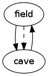

How to program a text adventure in C
11. Conditions
So far, all the objects’ attributes were data: text, numbers.
But attributes may just as well be code.
In the previous chapter, we limited the player’s freedom of movement
by closing the cave entrance (passage intoCave).
This already makes the game a lot more challenging,
but it does not make much of a puzzle,
unless we offer a tiny possibility for the player to open the passage.
The real challenge should be for the player
to find the condition under which the passage opens.
Let’s take a simple example.
To get past the guard and enter the cave,
the player has to either kill or bribe the guard
(or both, for what it’s worth).
In other words:
- when the guard is dead (health = 0), the entrance is open
- when the guard is holding the silver coin, the entrance is open
- when neither is the case, the entrance is closed
Opening a closed passage (in this case intoCave)
involves changing a number of attribute values:
- destination
changes from NULL to cave
- textGo
changes from
‘the guard stops you...’
to
‘you walk into the cave’
- description and detail
need not change in this particular case;
but for a doorway or grating,
either one (or both) would typically contain some text that changes
from ‘open’ to ‘closed’
There are a number of ways to accomplish this.
Here, I will discuss an approach that is simple, maintainable and versatile.
First of all, we define two separate passages:
one that represents the open passage,
and the other representing the closed passage.
The passages are identical in every attribute except for the ones listed above.
(In the generated map you see below,
notice the two arrows leading into the cave; one solid, one dashed.)
Next, we introduce a new attribute named condition
that determines whether or not a certain object exists.
The two passages will be given
mutually exclusive
conditions, so that only one of them can exist at any given time.
Each condition will be implemented as a
boolean-valued function;
true means the object exists, false means it does not.

| bool intoCaveIsOpen(void)
{
return guard->health == 0 || silver->location == guard;
}
bool intoCaveIsClosed(void)
{
return guard->health > 0 && silver->location != guard;
}
|
The new attribute condition is a pointer to such a function:
After some small modifications to object.awk,
similar to those made in the previous chapter,
we can immediately start assigning functions to the new attribute
in object.txt.
| Sample output |
|---|
Welcome to Little Cave Adventure.
You are in an open field.
You see:
a silver coin
a burly guard
a cave entrance to the east
dense forest all around
--> go entrance
The guard stops you from walking into the cave.
--> get coin
You pick up a silver coin.
--> give coin
You give a silver coin to a burly guard.
--> go entrance
You walk into the cave.
You are in a little cave.
You see:
a gold coin
a way out to the west
solid rock all around
--> quit
Bye!
|
| - intoCave
condition intoCaveIsOpen
description "a cave entrance to the east"
tags "east", "entrance"
location field
destination cave
detail "The entrance is just a narrow opening in a small outcrop.\n"
textGo "You walk into the cave.\n"
- intoCaveBlocked
condition intoCaveIsClosed
description "a cave entrance to the east"
tags "east", "entrance"
location field
prospect cave
detail "The entrance is just a narrow opening in a small outcrop.\n"
textGo "The guard stops you from walking into the cave.\n"
|
The two ‘condition’ functions are so specific,
each of them is used just this once.
Now, wouldn’t it be nice to define the functions right where we need them?
Many programming languages support
anonymous functions;
something like this:
| - intoCave
condition { return guard->health == 0 || silver->location == guard; }
...
- intoCaveBlocked
condition { return guard->health > 0 && silver->location != guard; }
...
|
Plain C does not allow this,
but since object.txt is a product of our own
domain-specific language
(see chapter 9),
we can do anything we like!
That is, if we can make the code generator
turn it into something the C compiler will swallow.
The following adjustments to object.awk will do just that.
| object.awk |
- BEGIN {
- count = 0;
- obj = "";
- if (pass == "h") {
- print "#include <stdbool.h>";
- }
- if (pass == "c2") {
- print "\nstatic bool alwaysTrue(void) { return true; }";
- print "\nOBJECT objs[] = {";
- }
- }
- /^- / {
- outputRecord(",");
- obj = $2;
- prop["condition"] = "alwaysTrue";
- prop["description"] = "NULL";
- prop["tags"] = "";
- prop["location"] = "NULL";
- prop["destination"] = "NULL";
- prop["prospect"] = "";
- prop["details"] = "\"You see nothing special.\\n\"";
- prop["contents"] = "\"You see\"";
- prop["textGo"] = "\"You can't get much closer than this.\\n\"";
- prop["weight"] = "99";
- prop["capacity"] = "0";
- prop["health"] = "0";
- }
- obj && /^[ \t]+[a-z]/ {
- name = $1;
- $1 = "";
- if (name in prop) {
- prop[name] = $0;
- if (/^[ \t]*\{/) {
- prop[name] = name count;
- if (pass == "c1") print "static bool " prop[name] "(void) " $0;
- }
- }
- else if (pass == "c2") {
- print "#error \"" FILENAME " line " NR ": unknown attribute '" name "'\"";
- }
- }
- !obj && pass == (/^#include/ ? "c1" : "h") {
- print;
- }
- END {
- outputRecord("\n};");
- if (pass == "h") {
- print "\n#define endOfObjs\t(objs + " count ")";
- print "\n#define validObject(obj)\t" \
- "((obj) != NULL && (*(obj)->condition)())";
- print "\n#define forEachObject(obj)\t" \
- "for (obj = objs; obj < endOfObjs; obj++) if (validObject(obj))";
- }
- }
- function outputRecord(separator)
- {
- if (obj) {
- if (pass == "h") {
- print "#define " obj "\t(objs + " count ")";
- }
- else if (pass == "c1") {
- print "static const char *tags" count "[] = {" prop["tags"] ", NULL};";
- }
- else if (pass == "c2") {
- print "\t{\t/* " count " = " obj " */";
- print "\t\t" prop["condition"] ",";
- print "\t\t" prop["description"] ",";
- print "\t\ttags" count ",";
- print "\t\t" prop["location"] ",";
- print "\t\t" prop["destination"] ",";
- print "\t\t" prop[prop["prospect"] ? "prospect" : "destination"] ",";
- print "\t\t" prop["details"] ",";
- print "\t\t" prop["contents"] ",";
- print "\t\t" prop["textGo"] ",";
- print "\t\t" prop["weight"] ",";
- print "\t\t" prop["capacity"] ",";
- print "\t\t" prop["health"];
- print "\t}" separator;
- delete prop;
- }
- count++;
- }
- }
|
Explanation:
- Line 8, 16:
most objects are unconditional;
their condition is a trivial function that always returns true.
- Line 35-38:
an anonymous function (anything starting with a curly brace)
is replaced by a function with a generated name;
the name is the attribute name (in this case condition)
followed by a number (the object count).
This technique is similar to the way we handle tags (lines 67 and 73).
- Line 55-56:
so far, our program contains five
for loops,
each of which needs to be expanded with an embedded condition check.
To avoid having to write (and maintain) the same code many times, I defined
a macro that encapsulates the for statement and the condition check.
It replaces the original for statement in a transparent way;
there is no need for an additional pair of curly braces
surrounding the loop’s body, despite the additional if statement.
So now we can add the extra passage and the conditions to object.txt,
as explained earlier.
| object.txt |
- #include <stdio.h>
- #include "object.h"
- typedef struct object {
- bool (*condition)(void);
- const char *description;
- const char **tags;
- struct object *location;
- struct object *destination;
- struct object *prospect;
- const char *details;
- const char *contents;
- const char *textGo;
- int weight;
- int capacity;
- int health;
- } OBJECT;
- extern OBJECT objs[];
- - field
- description "an open field"
- tags "field"
- details "The field is a nice and quiet place under a clear blue sky.\n"
- capacity 9999
- - cave
- description "a little cave"
- tags "cave"
- details "The cave is just a cold, damp, rocky chamber.\n"
- capacity 9999
- - silver
- description "a silver coin"
- tags "silver", "coin", "silver coin"
- location field
- details "The coin has an eagle on the obverse.\n"
- weight 1
- - gold
- description "a gold coin"
- tags "gold", "coin", "gold coin"
- location cave
- details "The shiny coin seems to be a rare and priceless artefact.\n"
- weight 1
- - guard
- description "a burly guard"
- tags "guard", "burly guard"
- location field
- details "The guard is a really big fellow.\n"
- contents "He has"
- health 100
- capacity 20
- - player
- description "yourself"
- tags "yourself"
- location field
- details "You would need a mirror to look at yourself.\n"
- contents "You have"
- health 100
- capacity 20
- - intoCave
- condition { return guard->health == 0 || silver->location == guard; }
- description "a cave entrance to the east"
- tags "east", "entrance"
- location field
- destination cave
- details "The entrance is just a narrow opening in a small outcrop.\n"
- textGo "You walk into the cave.\n"
- - intoCaveBlocked
- condition { return guard->health > 0 && silver->location != guard; }
- description "a cave entrance to the east"
- tags "east", "entrance"
- location field
- prospect cave
- details "The entrance is just a narrow opening in a small outcrop.\n"
- textGo "The guard stops you from walking into the cave.\n"
- - exitCave
- description "a way out to the west"
- tags "west", "out"
- location cave
- destination field
- details "Sunlight pours in through an opening in the cave's wall.\n"
- textGo "You walk out of the cave.\n"
- - wallField
- description "dense forest all around"
- tags "west", "north", "south", "forest"
- location field
- details "The field is surrounded by trees and undergrowth.\n"
- textGo "Dense forest is blocking the way.\n"
- - wallCave
- description "solid rock all around"
- tags "east", "north", "south", "rock"
- location cave
- details "Carved in stone is a secret password 'abccb'.\n"
- textGo "Solid rock is blocking the way.\n"
|
To make the conditions work, we need to adjust function getDistance,
plus every loop that scans through objects.
| misc.c |
- #include <stdio.h>
- #include "object.h"
- #include "misc.h"
- OBJECT *getPassage(OBJECT *from, OBJECT *to)
- {
- OBJECT *obj;
- forEachObject(obj)
- {
- if (obj->location == from && obj->prospect == to)
- {
- return obj;
- }
- }
- return NULL;
- }
- DISTANCE getDistance(OBJECT *from, OBJECT *to)
- {
- return !validObject(to) ? distUnknownObject :
- to == from ? distSelf :
- to->location == from ? distHeld :
- to == from->location ? distLocation :
- to->location == from->location ? distHere :
- getPassage(from->location, to) != NULL ? distOverthere :
- !validObject(to->location) ? distNotHere :
- to->location->location == from ? distHeldContained :
- to->location->location == from->location ? distHereContained :
- distNotHere;
- }
- OBJECT *actorHere(void)
- {
- OBJECT *obj;
- forEachObject(obj)
- {
- if (getDistance(player, obj) == distHere && obj->health > 0)
- {
- return obj;
- }
- }
- return NULL;
- }
- int listObjectsAtLocation(OBJECT *location)
- {
- int count = 0;
- OBJECT *obj;
- forEachObject(obj)
- {
- if (obj != player && obj->location == location)
- {
- if (count++ == 0)
- {
- printf("%s:\n", location->contents);
- }
- printf("%s\n", obj->description);
- }
- }
- return count;
- }
- int weightOfContents(OBJECT *container)
- {
- int sum = 0;
- OBJECT *obj;
- forEachObject(obj)
- {
- if (obj->location == container) sum += obj->weight;
- }
- return sum;
- }
|
There is one more object loop to be fixed, in noun.c:
| noun.c |
- #include <stdbool.h>
- #include <stdio.h>
- #include <string.h>
- #include "object.h"
- #include "misc.h"
- static bool objectHasTag(OBJECT *obj, const char *noun)
- {
- if (noun != NULL && *noun != '\0')
- {
- const char **tag;
- for (tag = obj->tags; *tag != NULL; tag++)
- {
- if (strcmp(*tag, noun) == 0) return true;
- }
- }
- return false;
- }
- static OBJECT ambiguousNoun;
- static OBJECT *getObject(const char *noun, OBJECT *from, DISTANCE maxDistance)
- {
- OBJECT *obj, *res = NULL;
- forEachObject(obj)
- {
- if (objectHasTag(obj, noun) && getDistance(from, obj) <= maxDistance)
- {
- res = res == NULL ? obj : &ambiguousNoun;
- }
- }
- return res;
- }
- OBJECT *getVisible(const char *intention, const char *noun)
- {
- OBJECT *obj = getObject(noun, player, distOverthere);
- if (obj == NULL)
- {
- if (getObject(noun, player, distNotHere) == NULL)
- {
- printf("I don't understand %s.\n", intention);
- }
- else
- {
- printf("You don't see any %s here.\n", noun);
- }
- }
- else if (obj == &ambiguousNoun)
- {
- printf("Please be specific about which %s you mean.\n", noun);
- obj = NULL;
- }
- return obj;
- }
- OBJECT *getPossession(OBJECT *from, const char *verb, const char *noun)
- {
- OBJECT *obj = NULL;
- if (from == NULL)
- {
- printf("I don't understand who you want to %s.\n", verb);
- }
- else if ((obj = getObject(noun, from, distHeldContained)) == NULL)
- {
- if (getObject(noun, player, distNotHere) == NULL)
- {
- printf("I don't understand what you want to %s.\n", verb);
- }
- else if (from == player)
- {
- printf("You are not holding any %s.\n", noun);
- }
- else
- {
- printf("There appears to be no %s you can get from %s.\n",
- noun, from->description);
- }
- }
- else if (obj == &ambiguousNoun)
- {
- printf("Please be specific about which %s you want to %s.\n",
- noun, verb);
- obj = NULL;
- }
- else if (obj == from)
- {
- printf("You should not be doing that to %s.\n", obj->description);
- obj = NULL;
- }
- return obj;
- }
|
Notes:
- Right now, there is no way the guard will die.
So you might say
the ‘health check’ in our condition functions is quite useless.
Of course, this is easily fixed by adding a kill command;
see chapter 20.
- The two condition functions are complementary; they qualify as
duplicate code.
To eliminate that, we might decide to make one function call the other
(with the ‘!’ operator to negate the result).
An anonymous function has no (stable) name,
but we can refer to it by its object.
We could replace the condition function of intoCaveBlocked by:
| { return !(*intoCave->condition)(); }
|
- For simplicity, the condition functions have no parameter.
It might actually be better to pass a parameter OBJECT *obj;
that makes it possible to write more generic condition functions
that can be re-used across multiple objects.
- In theory, any object can be made ‘conditional’.
In practice, its main benefit lies with passages.
But in the next chapter,
you can see a similar technique being applied to an item.
Next chapter: 12. Open and close